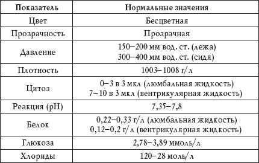

Материалом для анализа является спинномозговая жидкость, которую получают путем люмбальной пункции или пункции желудочков мозга.
Общее исследование
Нормальные показатели при анализе спинномозговой жидкости приведены в таблице 73.
Таблица 73
Исследование спинномозговой жидкости. Нормальные показатели

Цвет
Красный
Красный цвет спинномозговой жидкости наблюдается при:
• субарахноидальном кровоизлиянии;
• попадании крови.
Ксантохромный
Ксантохромный цвет спинномозговой жидкости наблюдается при:
• хронической субдуральной гематоме;
• интраспинальной опухоли;
• карциноматозе мозговых оболочек.
Желто-зеленый, зеленоватый
Гнойный цвет спинномозговой жидкости наблюдается при:
• вскрывшемся абсцессе мозга;
• гнойном менингите.
Опалесцирующий
Опалесцирующий цвет спинномозговой жидкости наблюдается при:
• бактериальном менингите;
• карциноматозе мозговых оболочек.
Прозрачность
Помутнение
Помутнение спинномозговой жидкости наблюдается при:
• увеличении количества эритроцитов, лейкоцитов или эпителия;
• наличии большого количества микроорганизмов.
Давление
Повышенный показатель
Повышенное давление спинномозговой жидкости наблюдается при:
• абсцессе;
• субдуральной гематоме;
• опухоли;
• черепно-мозговой травме;
• туберкулезе мозга;
• остром бактериальном менингите;
• вирусной менингоэнцефалитной инфекции;
• инфаркте мозга.
Пониженный показатель
Пониженное давление спинномозговой жидкости наблюдается при:
• хронической субдуральной гематоме;
• интраспинальной опухоли.
Плотность
Повышенный показатель
Повышение плотности спинномозговой жидкости наблюдается при:
• травмах головного мозга;
• воспалении мозговых оболочек.
Пониженный показатель
Понижение плотности спинномозговой жидкости наблюдается при гидроцефалии.
Цитоз
Повышенный показатель
Повышенный цитоз – плеоцитоз – наблюдается при:
• опухоли мозга;
• интракраниальном абсцессе;
• менингите;
• инфаркте мозга;
• прорыве абсцесса;
• аллергии;
• глистных инвазиях головного мозга;
• новообразованиях в оболочках мозга;
• метастазах раковых опухолей;
• кровоизлиянии в мозг.
Реакция
При большинстве заболеваний pH спинномозговой жидкости практически не меняется.
Белок
Повышенный показатель
Повышение количества белка в спинномозговой жидкости наблюдается при:
• серозном и гнойном менингите;
• кровоизлиянии в мозг;
• субдуральной гематоме (хронической);
• инфаркте мозга;
• интракраниальном абсцессе;
• опухоли мозга;
• энцефалите;
• сдавлении спинного мозга;
• грыже позвоночного диска.
Глюкоза
Повышенный показатель
Повышение количества глюкозы в спинномозговой жидкости наблюдается при:
• энцефалите;
• сотрясении головного мозга;
• опухоли головного мозга;
• приступе эпилепсии;
• сахарном диабете.
Пониженный показатель
Понижение количества глюкозы в спинномозговой жидкости наблюдается при:
• туберкулезном менингите;
• воспалении оболочек мозга.
Хлориды
Повышенный показатель
Повышение количества хлоридов в спинномозговой жидкости наблюдается при:
• энцефалите;
• опухоли головного мозга;
• почечной недостаточности;
• сердечной недостаточности.
Пониженный показатель
Понижение количества хлоридов в спинномозговой жидкости наблюдается при:
• опухоли головного мозга;
• менингите.